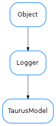

TaurusModel¶

-
class
TaurusModel(full_name, parent, serializationMode=None)[source]¶ Bases:
taurus.core.util.log.Logger-
RegularEvent= (0, 1, 2)¶
-
fireEvent(event_type, event_value, listeners=None)[source]¶ sends an event to all listeners or a specific one
-
fullname¶
-
getDisplayDescrObj(cache=True)[source]¶ A brief description of the model. Can be used as tooltip, for example
-
getFragmentObj(fragmentName=None)[source]¶ Returns a fragment object of the model. A fragment of a model is a python attribute of the model object.
Fragment names including dots will be used to recursively get fragments of fragments.
For a simple fragmentName (no dots), this is roughly equivalent to getattr(self, fragmentName)
If the model does not have the fragment,
AttributeErroris raisedParameters: fragmentName ( strorNone) – the returned value will correspond to the given fragmentName. If None is passed the defaultFragmentName will be used instead.Return type: objReturns: the member of the modelObj referred by the fragment.
-
getSerializationMode()[source]¶ Gives the serialization operation mode.
Return type: TaurusSerializationModeReturns: the current serialization mode
-
name¶
-
parentObj¶
-